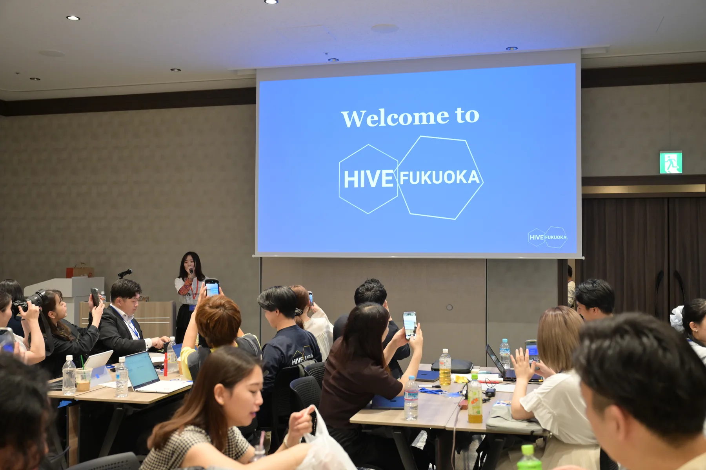
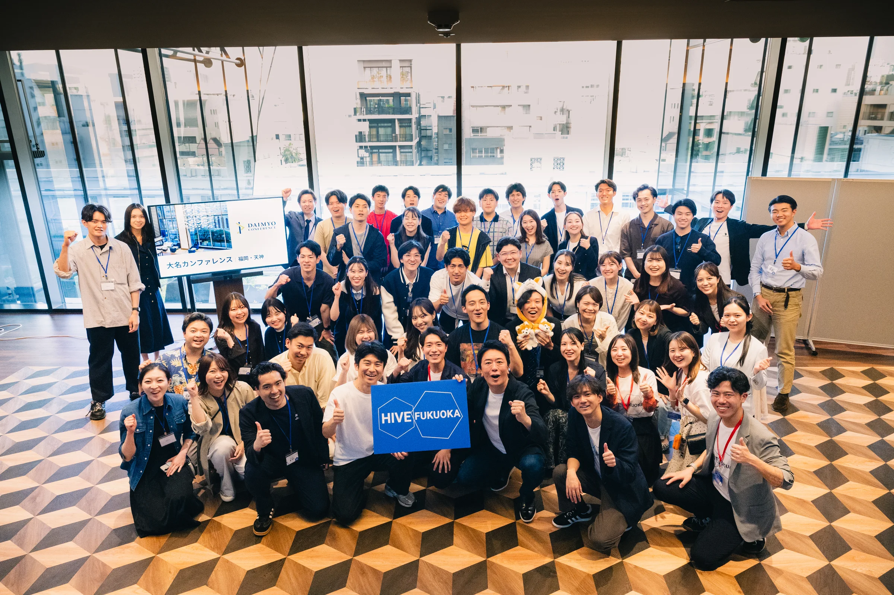
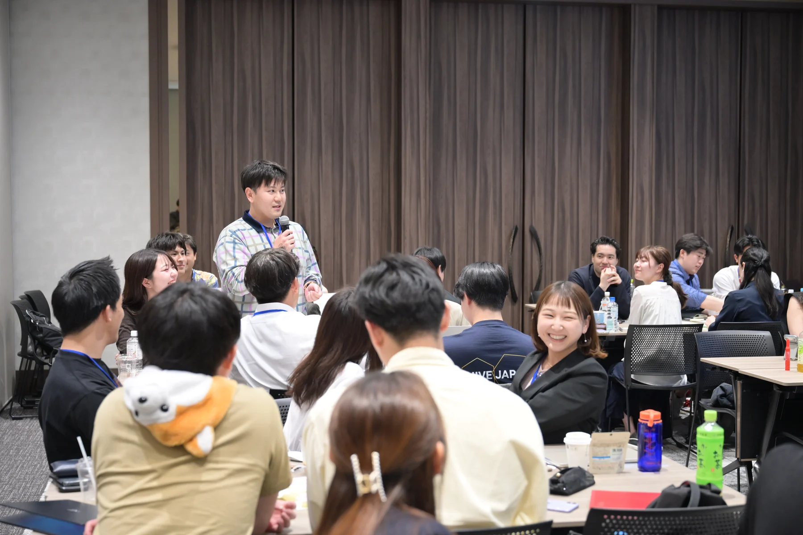
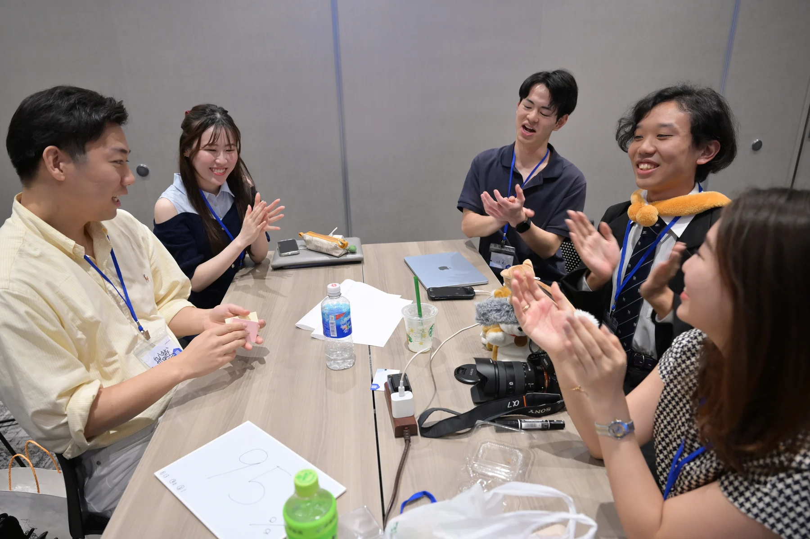
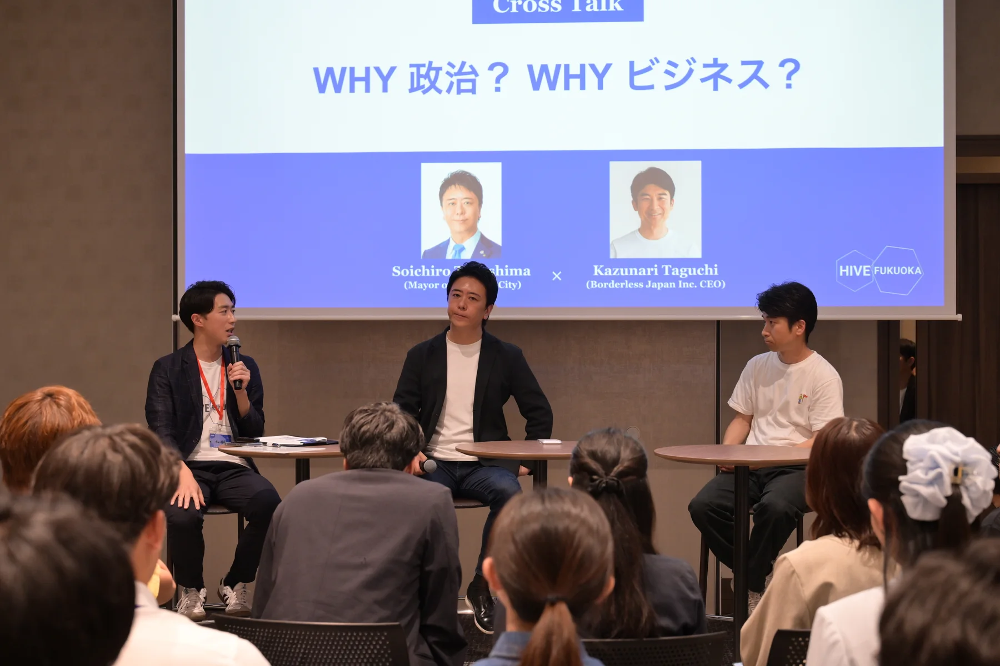
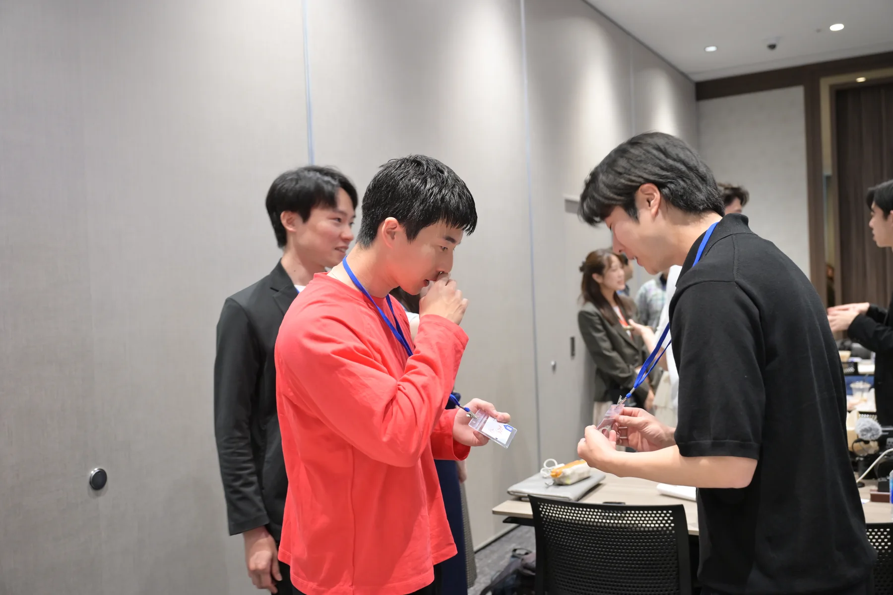
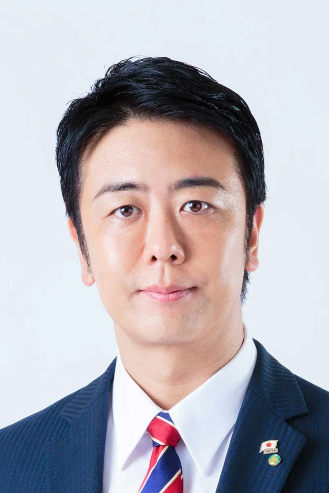
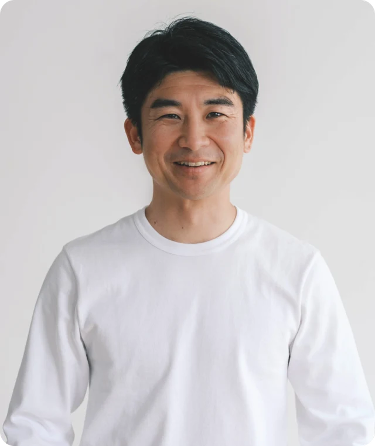
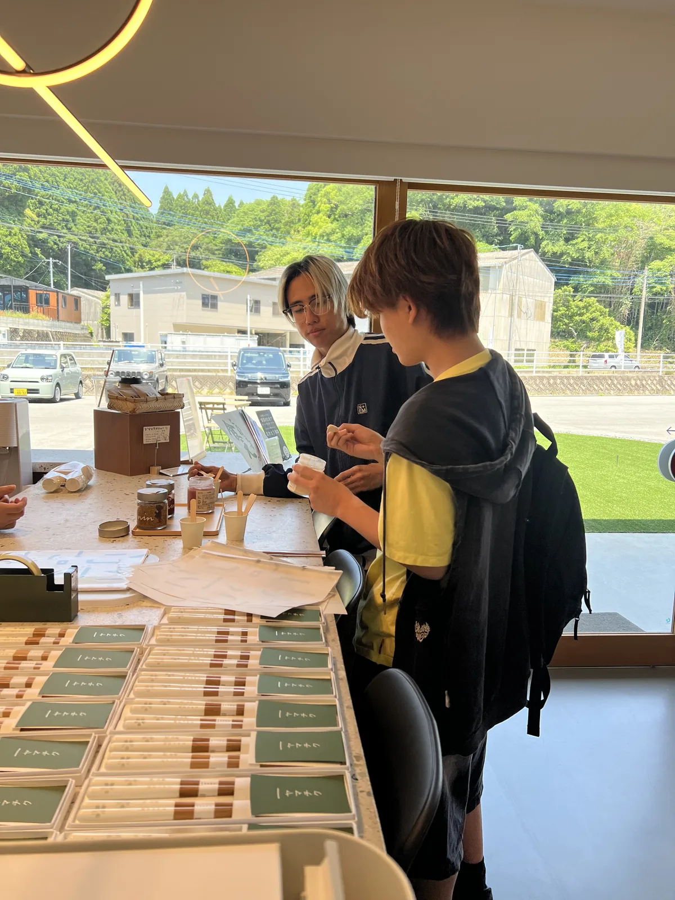

DAY 1 / FUKUOKA CITY
志アップデートセッションとゲストトーク
午前は「志フレームワーク」を使い、これまでの経験や今後取り組みたいことを一人ずつ言葉にしました。午後は、高島宗一郎福岡市長と田口一成ボーダレス・ジャパン代表を迎え、これまでの実践と福岡の可能性について話を伺いました。

5月16日・17日の2日間、福岡県内と県外から参加者が集まりました。1日目は福岡市内でセッションとゲストトーク、2日目は4つのコースに分かれてフィールドワークを行いました。
参加者53名
福岡市内で、志アップデートセッションとゲストトークを行いました。

午前は「志フレームワーク」を使い、これまでの経験や今後取り組みたいことを一人ずつ言葉にしました。午後は、高島宗一郎福岡市長と田口一成ボーダレス・ジャパン代表を迎え、これまでの実践と福岡の可能性について話を伺いました。






福岡市長
2010年の就任以来、創業支援や「天神ビッグバン」などを通じて、福岡の都市づくりを進めている。

株式会社ボーダレス・ジャパン
代表取締役社長
福岡県出身。25歳でボーダレス・ジャパンを創業し、社会課題をビジネスで解決する社会起業家の創出と支援に取り組む。
天神・北九州・南関町・福岡市東区の4コースに分かれ、それぞれの地域で活動する方々を訪ねました。

参加者は関心に合わせてコースを選び、地域で活動する方々の仕事や取り組みを聞きました。観光では見えにくい、福岡の暮らしと挑戦に触れる時間となりました。
南関町コースでの一場面

フィールドワークの後は全員が再び集まり、各コースの内容を共有しました。
たくさんの仲間と出会い、福岡というふるさとを見つけ、生き方を振り返る。そんな二日間でした。
東京側と福岡側の融合がうまくできていて、気づいたら境目がなくなっていました。
どこにいても、やるかやらないか。福岡だからこそできることを、やり抜こうと思えました。
自由記述より抜粋・一部要約 / 回答者29名
開催にあたり、フィールドワークや会場運営にご協力いただきました。心より御礼申し上げます。
団体・企業・施設名は順不同